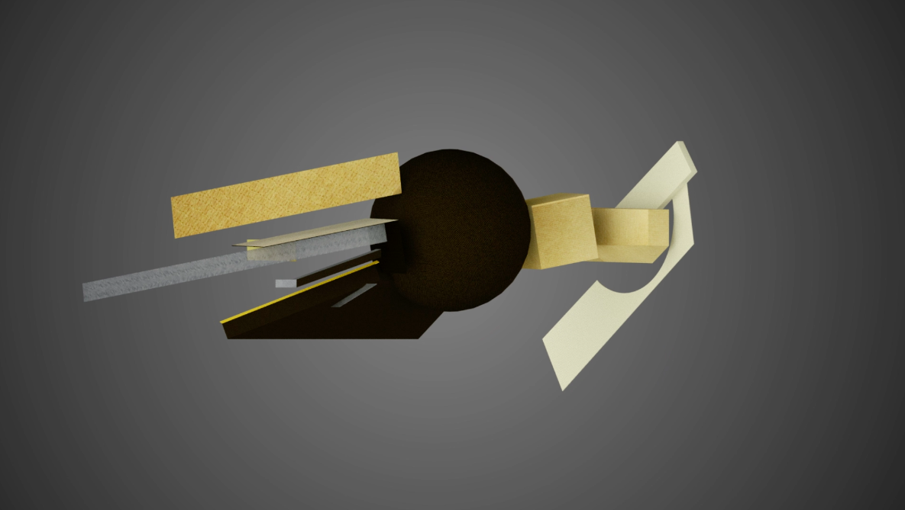
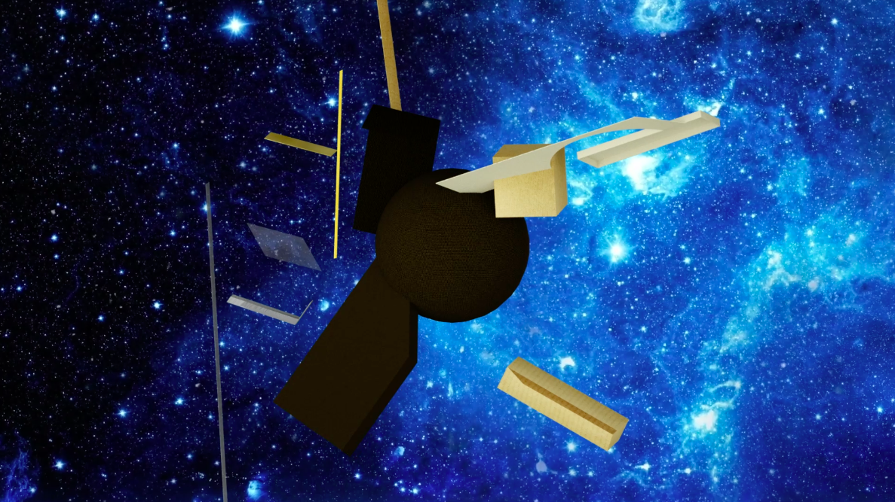
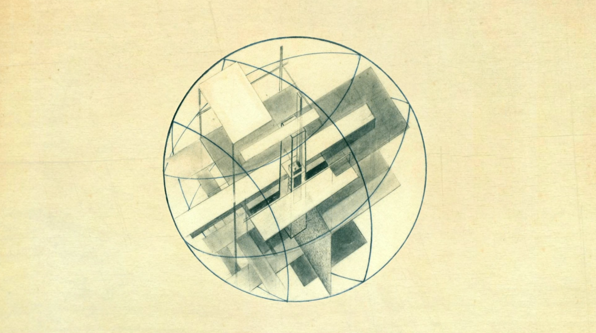
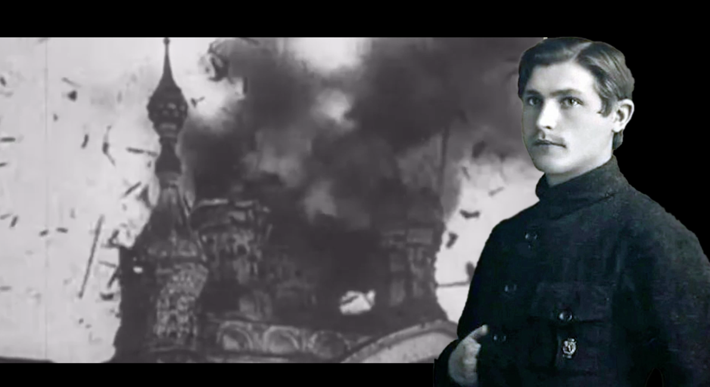
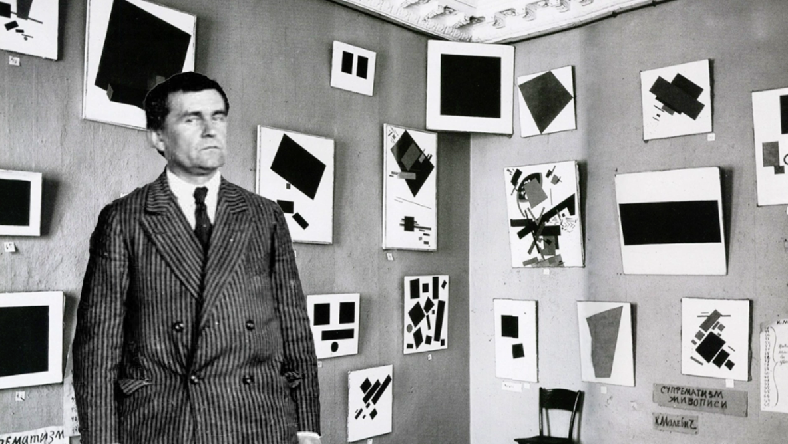
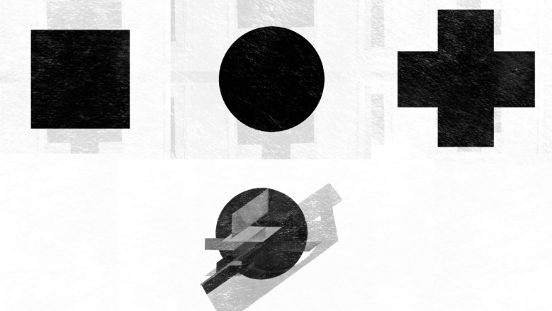
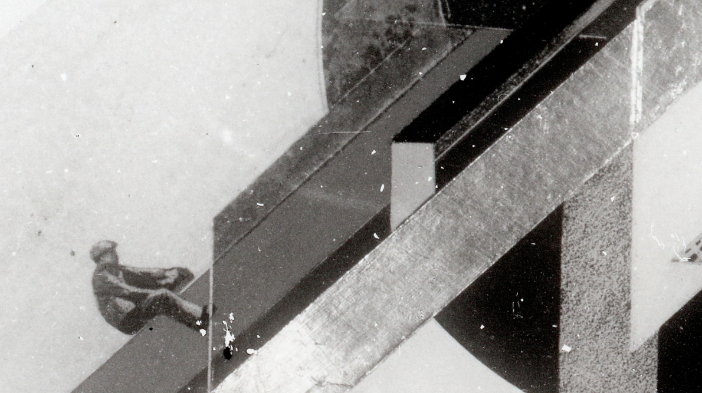
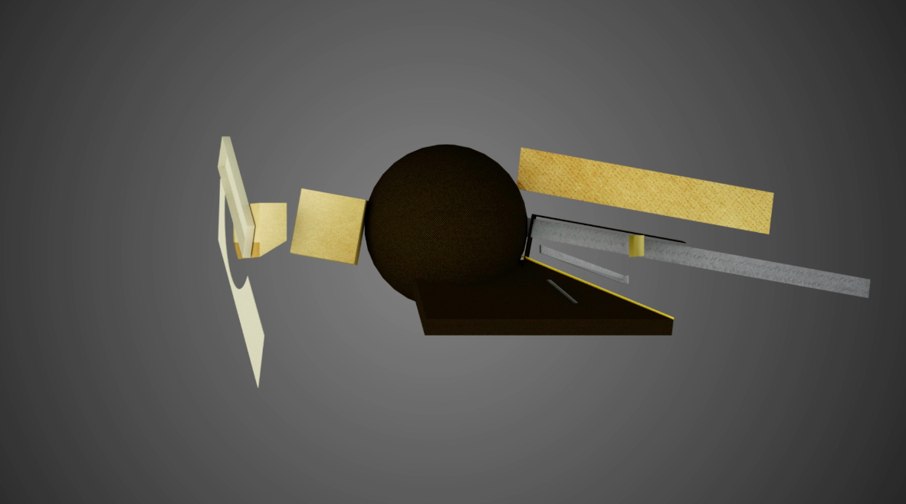

Εδώ είναι ένα τρισδιάστατο μοντέλο της «Dynamic City» του Klutsis. Παρατηρώντας το από διαφορετικές οπτικές γωνίες αποκαλύπτονται διάφορες ιδέες που ήταν καθοριστικές για τον συγγραφέα.
Στον πυρήνα της «Δυναμικής Πόλης» βρίσκεται η ιδέα της απεικόνισης ενός πλανήτη που παρασύρεται στο διάστημα, όπου διαφορετικά μινιμαλιστικά επίπεδα τέμνουν τη σφαίρα για να μεταδώσουν μηνύματα που σχετίζονται με τις δυνατότητες νέων τεχνολογικών εξελίξεων.
Ο Κλούτσης ζωγράφισε αρχικά την πρώτη εκδοχή της «Δυναμικής Πόλης» σε μια ξύλινη σανίδα που προοριζόταν για την παραδοσιακή αγιογραφία.
Ως ένθερμος κομμουνιστής, ο Κλούτσης έβλεπε τη θρησκεία ως ένα λείψανο του παλιού κόσμου που έπρεπε να εξαλειφθεί, να αντικατασταθεί από έναν νέο, σύγχρονο κόσμο με ανοιχτούς τεχνολογικούς και εκπαιδευτικούς ορίζοντες, βασισμένο στις αρχές της ισότητας και του σεβασμού προς την εργατική τάξη.
Όταν ο Kazimir Malevich παρουσίασε για πρώτη φορά το «Μαύρο τετράγωνο» του, το τοποθέτησε στη γωνία ανάμεσα σε δύο τοίχους, παρόμοιο με το πώς τοποθετείται μια εικόνα στα Ορθόδοξα σπίτια.
Αργότερα, ο Μάλεβιτς δημιούργησε το Τρίπτυχο: Μαύρο Τετράγωνο, Μαύρος Κύκλος και Μαύρος Σταυρός. Ο Μαύρος Κύκλος χρησιμεύει ως βάση για τον πίνακα του Κλούτση, τη «Δυναμική Πόλη».
Αυτό το έργο έθεσε τα θεμέλια για το φωτομοντάζ στην ΕΣΣΔ, καθώς ο Κλούτσης χρησιμοποίησε αυτή την τεχνική στις μεταγενέστερες εκδόσεις της «Δυναμικής Πόλης».
Μπορείτε να περιστρέψετε μόνοι σας το μοντέλο «Δυναμική Πόλη» και ίσως να ανακαλύψετε νέες προοπτικές και νοήματα μέσα σε αυτό.
